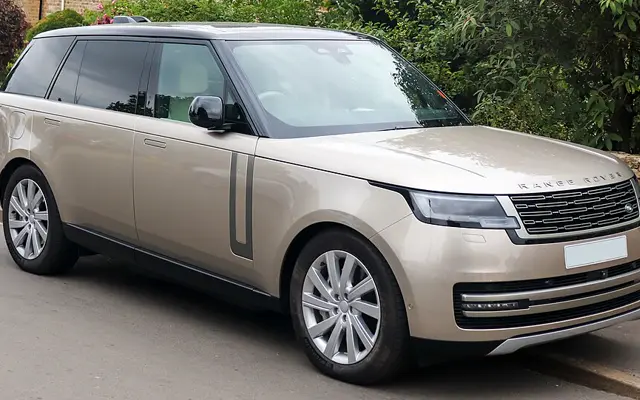

Par Motor › Precios por modelo › Land Rover Range Rover
Precio de segunda mano · noviembre de 2026¿Cuánto vale un Land Rover Range Rover de segunda mano?

Precio justo estimado de un Land Rover Range Rover usado en España, año por año, con los kilómetros normales para su edad y en buen estado: de 14.000 € a 179.200 €. Para tasar el tuyo con sus kilómetros reales y su estado, usa el tasador gratis.
Precios del Land Rover Range Rover por año
Range Rover L322 (2002–2012)
Precio de nuevo: TDV8 3.6 272 CV, 90.000 € · Supercharged 5.0 510 CV, 125.000 € · TDV8 4.4 313 CV, 105.000 €
| Año | Km normales | TDV8 3.6 272 CV · Diésel | Supercharged 5.0 510 CV · Gasolina | TDV8 4.4 313 CV · Diésel |
|---|---|---|---|---|
| 2012 | 100.000 km | 30.900 € | 44.200 € | 36.000 € |
| 2011 | 100.000 km | 28.500 € | 40.800 € | 33.300 € |
| 2010 | 100.000 km | 26.400 € | 37.700 € | 30.700 € |
| 2009 | 100.000 km | 24.300 € | 34.900 € | 28.400 € |
| 2008 | 100.000 km | 22.500 € | 32.200 € | 26.200 € |
| 2007 | 100.000 km | 20.800 € | 29.800 € | 24.300 € |
| 2006 | 100.000 km | 19.200 € | 27.500 € | 22.400 € |
| 2005 | 100.000 km | 17.700 € | 25.400 € | 20.700 € |
| 2004 | 100.000 km | 16.400 € | 23.500 € | 19.100 € |
| 2003 | 100.000 km | 15.200 € | 21.700 € | 17.700 € |
| 2002 | 100.000 km | 14.000 € | 20.000 € | 16.300 € |
Range Rover L405 (2013–2021)
Precio de nuevo: TDV6 3.0 258 CV, 105.000 € · P400e (enchufable) 404 CV, 120.000 € · Supercharged 5.0 525 CV, 150.000 €
| Año | Km normales | TDV6 3.0 258 CV · Diésel | P400e (enchufable) 404 CV · Híbrido enchufable | Supercharged 5.0 525 CV · Gasolina |
|---|---|---|---|---|
| 2021 | 100.000 km | 57.600 € | 65.100 € | 90.300 € |
| 2020 | 100.000 km | 56.700 € | 56.400 € | 78.300 € |
| 2019 | 100.000 km | 55.700 € | 52.700 € | 73.100 € |
| 2018 | 100.000 km | 54.500 € | 51.100 € | 70.900 € |
| 2017 | 100.000 km | 53.100 € | 49.400 € | 68.600 € |
| 2016 | 100.000 km | 49.400 € | 47.700 € | 66.200 € |
| 2015 | 100.000 km | 45.600 € | 46.000 € | 63.800 € |
| 2014 | 100.000 km | 42.200 € | 44.200 € | 61.400 € |
| 2013 | 100.000 km | 39.000 € | 41.300 € | 57.400 € |
Range Rover L460 (2022–hoy)
Precio de nuevo: D300 3.0 (microhíbrido) 300 CV, 135.000 € · P440e (enchufable) 440 CV, 150.000 € · P530 4.4 530 CV, 175.000 €
| Año | Km normales | D300 3.0 (microhíbrido) 300 CV · Diésel | P440e (enchufable) 440 CV · Híbrido enchufable | P530 4.4 530 CV · Gasolina |
|---|---|---|---|---|
| 2026 | 10.000 km | 132.900 € | 138.300 € | 179.200 € |
| 2025 | 30.000 km | 111.700 € | 116.200 € | 150.600 € |
| 2024 | 50.000 km | 103.200 € | 107.400 € | 139.200 € |
| 2023 | 70.000 km | 95.300 € | 99.200 € | 128.600 € |
| 2022 | 90.000 km | 81.000 € | 91.700 € | 118.800 € |
Kilómetros normales: 15.000 al año en gasolina, híbridos y eléctricos, y 20.000 en diésel, con un máximo de 100.000 km (por encima no tasamos: el precio depende demasiado del historial de cada coche). Cifras redondeadas a 100 €.
Preguntas frecuentes
¿Cuánto vale un Land Rover Range Rover de segunda mano?
Según el año, la versión y los kilómetros, un Land Rover Range Rover usado vale hoy de 14.000 € a 179.200 € en España. El más barato de nuestra tabla es un TDV8 3.6 de 2002 (14.000 €) y el más caro un P530 4.4 de 2026 (179.200 €). Son precios justos estimados entre particulares y profesionales, con los kilómetros normales para su edad y en buen estado.
¿Cuánto valor pierde un Land Rover Range Rover al año?
Con unos años encima, un Land Rover Range Rover pierde alrededor de un 10 % de su valor cada año (calculado sobre el D300 3.0 (microhíbrido) de la generación Range Rover L460). Los primeros años la caída es mayor y a partir de los 70.000 km se acelera.
¿Qué motorizaciones tiene el Land Rover Range Rover?
En nuestra base de datos hay versiones diésel, gasolina y híbrido enchufable, en 3 generaciónes: Range Rover L322, Range Rover L405 y Range Rover L460.
¿Cómo sé si me piden demasiado por un Land Rover Range Rover?
Abre el tasador de Par Motor, elige el Land Rover Range Rover, el año y los kilómetros reales, y escribe lo que te piden. Te diremos si está por debajo del precio justo (chollo) o por encima (caro). Es gratis y no pide registro ni matrícula.
Otros Land Rover
Compara su coste real
El precio de compra es solo una parte. Mira cuánto te costaría al mes con combustible, seguro, neumáticos, mantenimiento y lo que pierde de valor.
Abrir el comparador →